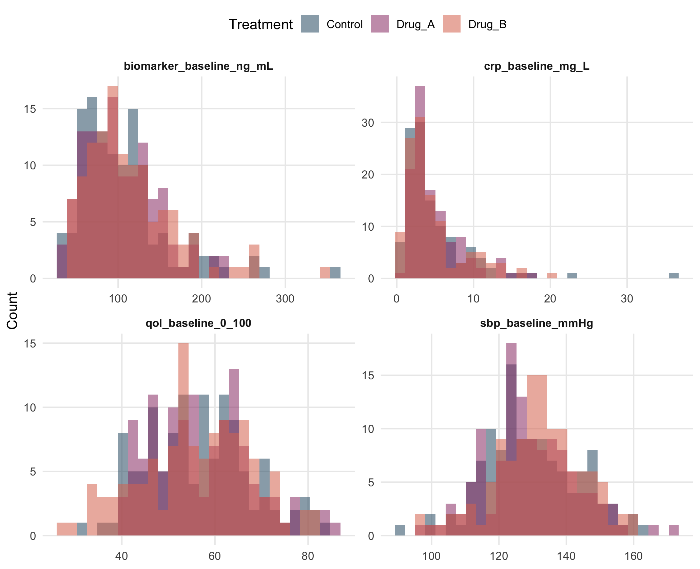

For observations \(x_1,\ldots,x_n\), the arithmetic mean is
\[ \bar{x}=\frac{1}{n}\sum_{i=1}^{n}x_i. \]
It uses every observation and is efficient for many regular distributions, but it can be strongly influenced by a long tail or extreme values. The median is the middle ordered value and is more resistant to outliers. A trimmed mean compromises between the two by removing a fixed proportion from each tail before averaging.
x <- dat$crp_baseline_mg_L
location <- tibble(mean=mean(x, na.rm=TRUE),
median=median(x, na.rm=TRUE),
trimmed_mean_10pct=mean(x, trim=.10, na.rm=TRUE),
q25=quantile(x,.25,na.rm=TRUE), q75=quantile(x,.75,na.rm=TRUE));
kbl(location, digits=2, caption="Location summaries for baseline CRP")| mean | median | trimmed_mean_10pct | q25 | q75 |
|---|---|---|---|---|
| 4.86 | 3.48 | 4.18 | 2.35 | 6.01 |
When observations carry legitimate representation or precision weights, the weighted mean is
\[ \bar{x}_w=\frac{\sum_i w_i x_i}{\sum_i w_i}. \]
The workbook contains sampling_weight specifically for sampling demonstrations.However, the trial’s primary treatment comparisons are not weighted by this educational variable.
ok <- complete.cases(dat$sbp_baseline_mmHg, dat$sampling_weight)
tibble(unweighted=mean(dat$sbp_baseline_mmHg[ok]),
weighted=weighted.mean(dat$sbp_baseline_mmHg[ok], dat$sampling_weight[ok])) |>
kbl(digits=2, caption="Unweighted and weighted baseline SBP")| unweighted | weighted |
|---|---|
| 130.1 | 130.2 |
The sample variance measures the average squared spread of observations around the sample mean.
\[ s^2=\frac{\sum_{i=1}^{n}(x_i-\bar{x})^2}{n-1}, \]
and the sample standard deviation is
\[ s=\sqrt{s^2}, \]
which returns dispersion to the original measurement scale.
The interquartile range is
\[ IQR=Q_3-Q_1, \]
the width of the middle 50% of observations.
The median absolute deviation (MAD) measures the typical distance of observations from the median.
\[ MAD=\operatorname{median}_{i}\left|x_i-\tilde{x}\right|, \]
where \(\tilde{x}\) is the sample median. MAD is a robust measure of dispersion because it is based on absolute deviations from the median and is less sensitive to extreme observations than the standard deviation.
tibble(
variable = c("Baseline SBP", "Baseline CRP"),
SD = c(
sd(dat$sbp_baseline_mmHg, na.rm=TRUE),
sd(dat$crp_baseline_mg_L, na.rm=TRUE)
),
IQR = c(
IQR(dat$sbp_baseline_mmHg, na.rm=TRUE),
IQR(dat$crp_baseline_mg_L, na.rm=TRUE)
),
MAD_scaled = c(
mad(dat$sbp_baseline_mmHg, na.rm=TRUE),
mad(dat$crp_baseline_mg_L, na.rm=TRUE)
),
MAD_raw = c(
mad(dat$sbp_baseline_mmHg, constant=1, na.rm=TRUE),
mad(dat$crp_baseline_mg_L, constant=1, na.rm=TRUE)
)
) |>
kbl(digits=2, caption="Classical and robust measures of spread")| variable | SD | IQR | MAD_scaled | MAD_raw |
|---|---|---|---|---|
| Baseline SBP | 13.44 | 16.42 | 12.53 | 8.45 |
| Baseline CRP | 4.06 | 3.66 | 2.31 | 1.56 |
The distinction is important. The lecture formula is the raw median absolute deviation. R’s mad() multiplies that quantity by a consistency constant by default; mad(x, constant=1) reproduces the raw formula.
A percentile is a cut point in the ordered data: the \(p\)th quantile is a value at or below which approximately \(100p\%\) of observations fall. Percentiles are especially useful for skewed biomarkers and for identifying clinically relevant distribution tails.
A good descriptive table reports the number of non-missing observations and summaries appropriate to the distribution. SBP is reasonably summarized by mean and SD; CRP is long-tailed, so median and IQR are more informative.
grouped <- dat |>
group_by(treatment_arm) |>
summarise(
n=n(),
across(c(age_years, sbp_baseline_mmHg),
list(mean=~mean(.x,na.rm=TRUE), sd=~sd(.x,na.rm=TRUE)),
.names="{.fn}_{.col}"),
across(c(crp_baseline_mg_L, biomarker_baseline_ng_mL),
list(median=~median(.x,na.rm=TRUE), IQR=~IQR(.x,na.rm=TRUE)),
.names="{.fn}_{.col}"),
.groups="drop"
)
kbl(grouped, digits=2, caption="Selected baseline summaries by randomized arm")| treatment_arm | n | mean_age_years | sd_age_years | mean_sbp_baseline_mmHg | sd_sbp_baseline_mmHg | median_crp_baseline_mg_L | IQR_crp_baseline_mg_L | median_biomarker_baseline_ng_mL | IQR_biomarker_baseline_ng_mL |
|---|---|---|---|---|---|---|---|---|---|
| Control | 120 | 52.42 | 13.45 | 129.5 | 13.74 | 3.40 | 3.85 | 95.3 | 56.62 |
| Drug_A | 120 | 55.88 | 12.50 | 129.1 | 13.48 | 3.71 | 3.55 | 96.3 | 54.93 |
| Drug_B | 120 | 56.79 | 11.50 | 131.6 | 13.09 | 3.44 | 3.41 | 101.8 | 59.15 |
In a randomized trial, baseline tables describe the sample. Routine p-values are usually unnecessary because baseline differences arise by chance from randomization.
For categorical variables, frequencies and proportions are the natural summaries.
severity <- dat |> count(treatment_arm, baseline_severity, name="n") |>
group_by(treatment_arm) |>
mutate(percent=100*n/sum(n)) |> ungroup()
kbl(severity, digits=1, caption="Baseline severity by treatment arm")| treatment_arm | baseline_severity | n | percent |
|---|---|---|---|
| Control | Mild | 45 | 37.5 |
| Control | Moderate | 33 | 27.5 |
| Control | Severe | 42 | 35.0 |
| Drug_A | Mild | 32 | 26.7 |
| Drug_A | Moderate | 56 | 46.7 |
| Drug_A | Severe | 32 | 26.7 |
| Drug_B | Mild | 34 | 28.3 |
| Drug_B | Moderate | 48 | 40.0 |
| Drug_B | Severe | 38 | 31.7 |
response_tab <- table(dat$treatment_arm, dat$response);
response_tab;
#>
#> No Yes
#> Control 88 32
#> Drug_A 68 52
#> Drug_B 50 70
prop.table(response_tab, margin=1)
#>
#> No Yes
#> Control 0.7333 0.2667
#> Drug_A 0.5667 0.4333
#> Drug_B 0.4167 0.5833Row proportions provide an initial indication of association between two categorical variables: differences across treatment arms may suggest an association between treatment type and clinical response.
The corresponding inferential analysis is developed in Chapters 3 and 6.
A histogram is a visual frequency table; its appearance depends on bin width.
A kernel density plot smooths the empirical distribution and uses density, not raw count or a direct category proportion, on the vertical axis. Its scale is defined so that the total area under the density curve is 1.
A boxplot compactly displays the median, quartiles, and points beyond the conventional whiskers.
base_long <- dat |>
dplyr::select(treatment_arm, sbp_baseline_mmHg, crp_baseline_mg_L, biomarker_baseline_ng_mL, qol_baseline_0_100) |>
pivot_longer(-treatment_arm, names_to="measure", values_to="value")
ggplot(base_long, aes(value, fill=treatment_arm)) +
geom_histogram(bins=28, alpha=.55, position="identity", na.rm=TRUE) +
facet_wrap(~measure, scales="free", ncol=2) +
scale_fill_manual(values=pal) +
labs(x=NULL, y="Count", fill="Treatment")
Figure 2.1: selected baseline distributions by randomized treatment arm.
A boxplot point beyond 1.5 IQR is not automatically an erroneous observation/ outlier. Before exclusion, ask whether the value is impossible, caused by a measurement or entry error, inconsistent with source data, or simply a legitimate extreme value.
Deleting a genuine observation because it weakens significance is unacceptable.
Robust summaries, transformations, and sensitivity analyses are preferable when extreme but valid observations materially affect a model.
Before inferential analysis, the analyst should be able to state: - the observational unit and whether observations are independent, paired, clustered, or repeated; - the outcome type and clinically meaningful direction of effect; - treatment/reference categories and factor coding; - the amount and pattern of missingness; - plausible ranges and units; - distributional shape, outliers, and group-specific spread; - whether a transformation has a scientific interpretation; - which baseline variables are genuinely pre-treatment covariates; - which variables are post-randomization and therefore require caution in causal treatment models.
For example, the adherence to treatment percentageadherence_pctis measured after randomization and may itself be affected by treatment. Adjusting for it can therefore change the treatment-effect estimand and introduce bias. For this reason, it is excluded from the primary treatment-effect models and considered only in clearly labeled associational analyses.